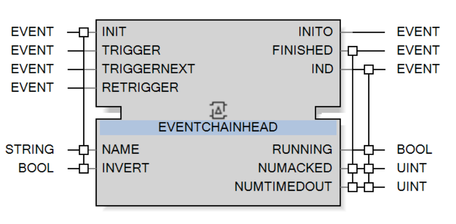
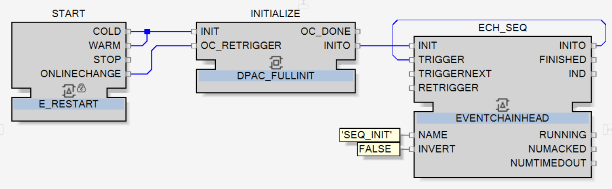

Setting-Up the CAT to be Online
To be ready to be tested online, few actions need to be done with the TankFilling CAT.
Place the CAT
Go to the layer TR1 of the application Whole_Milk_Tank from the System editor.
There add the TankFilling CAT to the layer and name it TankFillingSequence.

|
NOTE:
Even though the TankFilling CAT is a custom function block, it can be added the same way as the function blocks of standard libraries, as shown in the topic Adding a Function Block. |
Map the CAT
Map TankFillingSequence to the RES0 resource of the EcoRT_0 device following either method explained in the topic Mapping.
Add sequence initializing function block
Go to the Local layer of the RES0 resource.
There is currently in this layer only two function blocks: START and INITIALIZE.
A third one will be added especially to initialize the sequence. This function block is EVENCHAINHEAD.
|
 |
Like the DPAC_FULLINIT function block, as detailed in the topic Initializing the Device, the EVENCHAINHEAD is used to initialize specific function blocks by sending them the initialization trigger of the device.
|
|
NOTE:
The difference with DPAC_FULLINIT is that the EVENCHAINHEAD is initializing specific function blocks depending on its configuration and not all the application and hardware function blocks. |
-
Add the EVENCHAINHEAD function block and name it ECH_SEQ
. -
Add the constant FALSE to INVERT and 'SEQ_INIT' to NAME.
NOTE: This second constant is the one defining which function blocks will be initialized. Here, 'SEQ_INIT' is for initializing the sequence function blocks.
-
Link INITIALIZE.INITO to ECH_SEQ.INIT and ECH_SEQ.INITO to ECH_SEQ.TRIGGER.


|
The sequences will now be able to be initialized. Save All and move to the last section of the topic. |
Deploy Application
Go into the Deploy and Diagnostic editor and then, like in the topic Compiling, Deploying and Running the Application, proceed the next six actions:
-
Compile
-
-
Login
-
-
-
|
|
After doing these actions, the application, including TankFillingSequence, is deployed and running online. The CAT is then ready to be tested. |